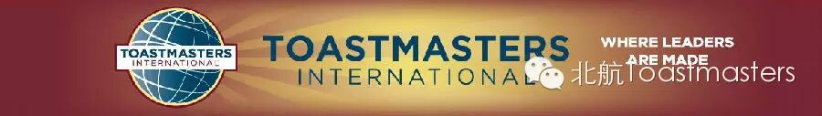
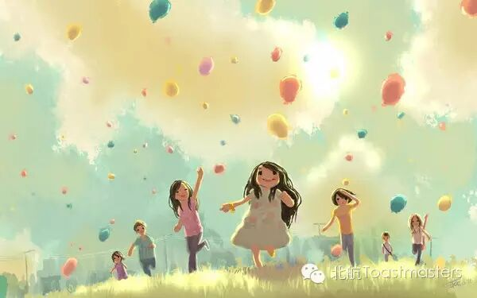
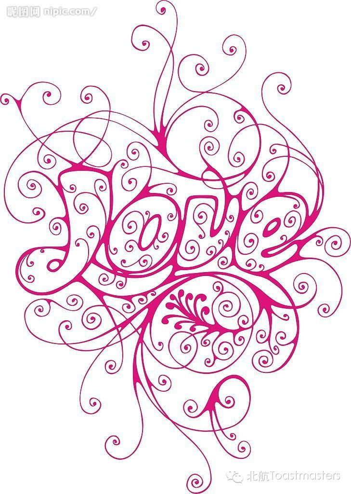
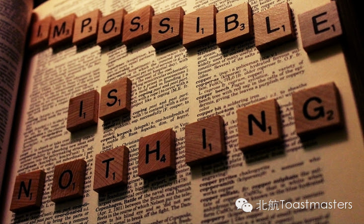

Back to Childhood
Time: Friday July.4 19:30-21:30
Venue: Room A212, New Main Building, Beihang University

Toastmaster: Sophie
Table Topic Master: Cindy
What is your dream? What are the things you really want to do? Most of people today can hardly answer these questions. But when asking a child, he can tell you immediately. Children always know what they want and believe they'll make it finally. However, when we grow up, we lost our belief and dreams. Because we are misled by this sophisticated world. So, this Friday, let's back to childhood and find the real you at the beginning.

Prepared Speech
For Me, What LOVE Means
CC3 Dale
Love is always one of the most magical things in the world. Because of love, people can have the power to do things that they though they would never touch. While, there are a thousand kind of love in a thousand people's eyes, Dale is not only a great speaker but also a geek. Aren't you curious about the love in a geek's eyes? Let's find it out together!

Presentation
IMPOSSIBLE IS NOTHING !
Doris
This is the first meeting since Doris became our president. As a president, she must have a lot of things to tell us. By saying impossible is nothing, what is the idea that she is going to deliver to us? We are really looking forward to her speech!

Map
Our meeting venue is RoomA212, New Main Building, Beihang University (北航新主楼A212房间). Click here to see large map. And you can phone to Deron for help.
TEL: 180-0125-3933
See you in the meeting!
https://mp.weixin.qq.com/s/B_lXm1ojqNVPruE_uhIv5Q
本页为抢救式本地归档，图文已永久保存。